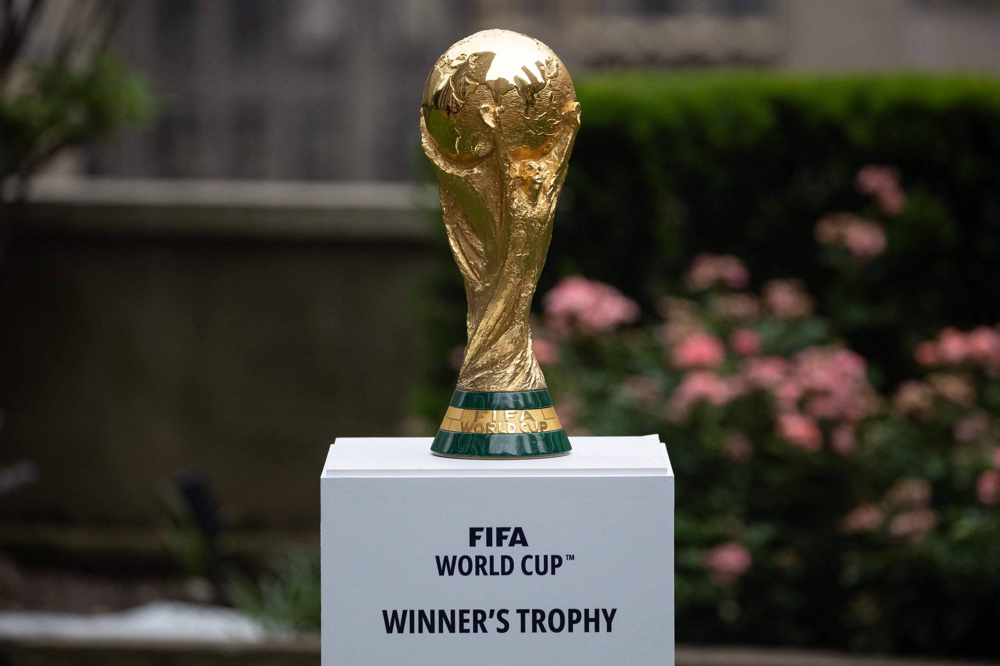
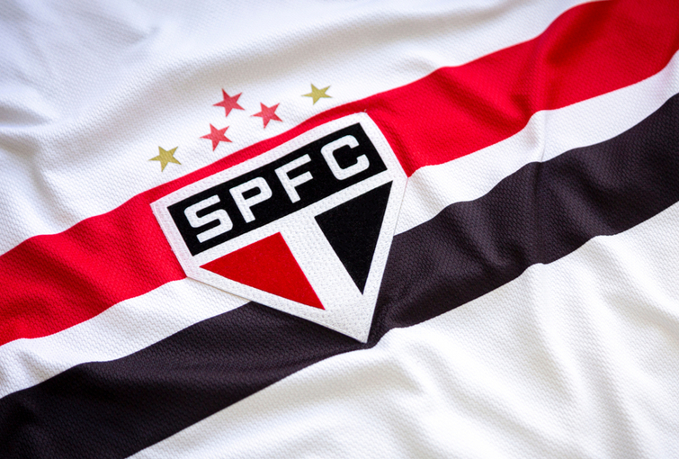
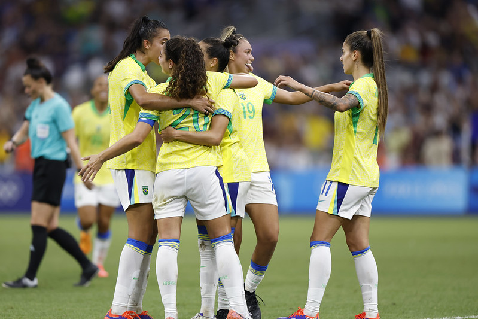

Messi, Cristiano Ronaldo, Neymar e outros ídolos podem disputar sua última Copa; torneio nos EUA, México e Canadá promete ser um ponto final simbólico de uma era
A Copa de 2026, que será realizada nos EUA, México e Canadá, deve marcar a despedida de grandes nomes do futebol mundial. Ídolos como Messi, Cristiano Ronaldo, Neymar, Modrić e Suárez provavelmente disputarão sua última Copa. A edição pode representar o fim de uma era e o início do protagonismo de uma nova geração de craques.
Com elenco encorpado e ambiente positivo, Tricolor foca em reforçar setores pontuais e manter boa fase no Brasileirão
Após mais uma vitória no Morumbi, o São Paulo FC vive um momento de estabilidade no Brasileirão 2025. O clube planeja reforçar o elenco com um meia criativo e um lateral-direito, visando manter o bom desempenho na reta final da temporada. Jogadores como Lucas e Calleri têm se destacado, e o ambiente no clube é considerado positivo e promissor.
Com recordes de audiência e investimentos em alta, modalidade se consolida mundialmente e atrai atenção de patrocinadores, torcedores e novas gerações
O futebol feminino vive um momento histórico de crescimento e visibilidade. Após o sucesso da Copa de 2023, a expectativa é alta para as Olimpíadas de Paris 2026. Ligas e clubes tradicionais estão investindo mais na modalidade, e estrelas como Alexia Putellas, Sam Kerr e Debinha seguem inspirando uma nova geração. No Brasil, a Seleção passa por renovação em busca do ouro inédito.